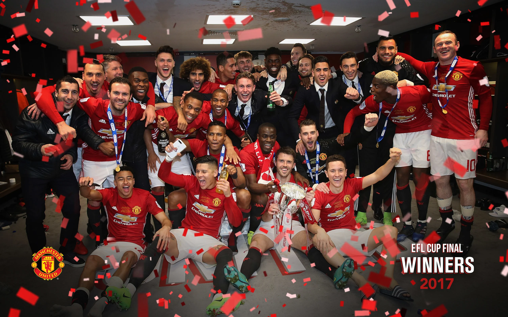
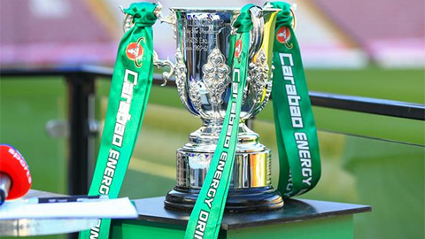
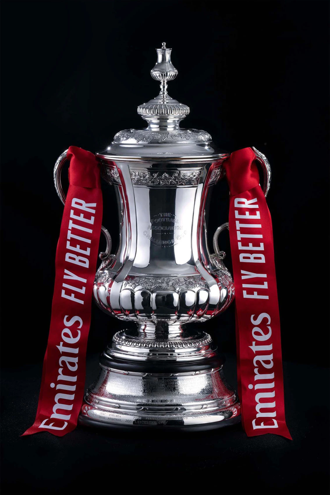
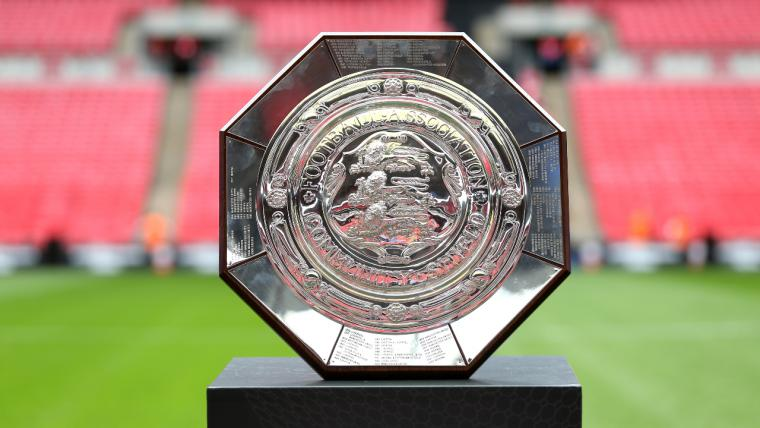
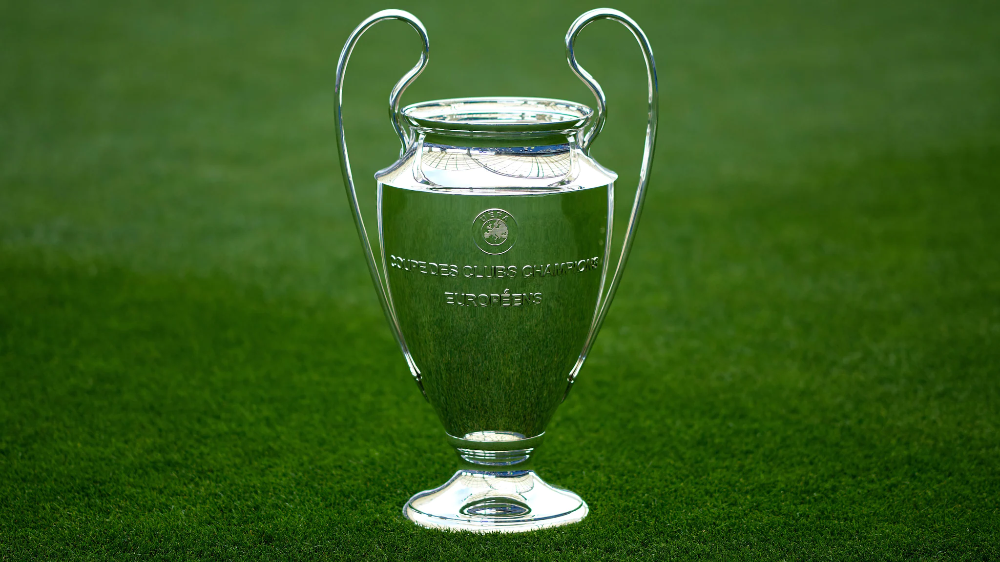
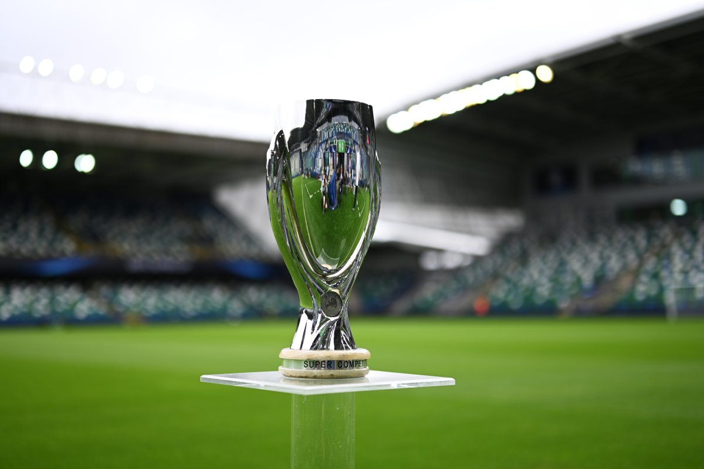

Manchester United are one of the most successful clubs in world football, with a glittering history of success on the field.

LEAGUE CUP
5 times

PREMIER CUP
20 times

FA CUP
12 times

FA COMMUNITY SHIELD
21 times

UEFA CHAMPIONS CUP
3 times

UEFA SUPER CUP
1 times